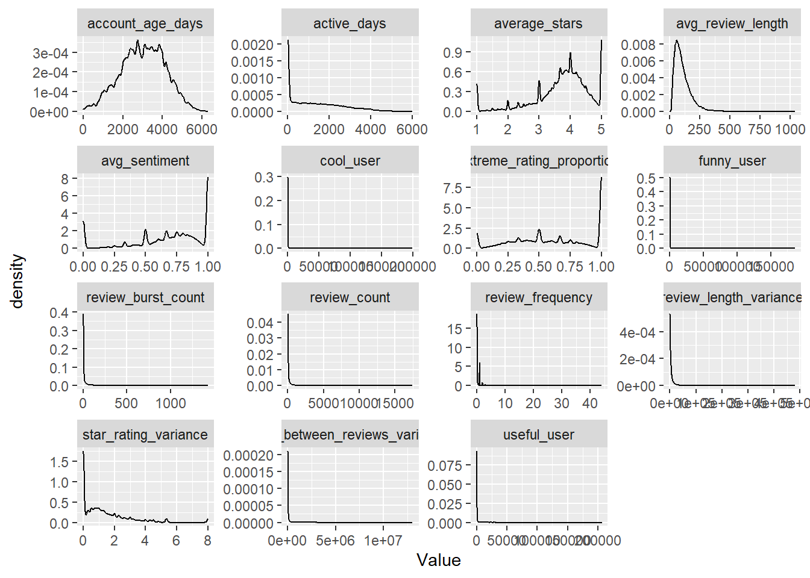
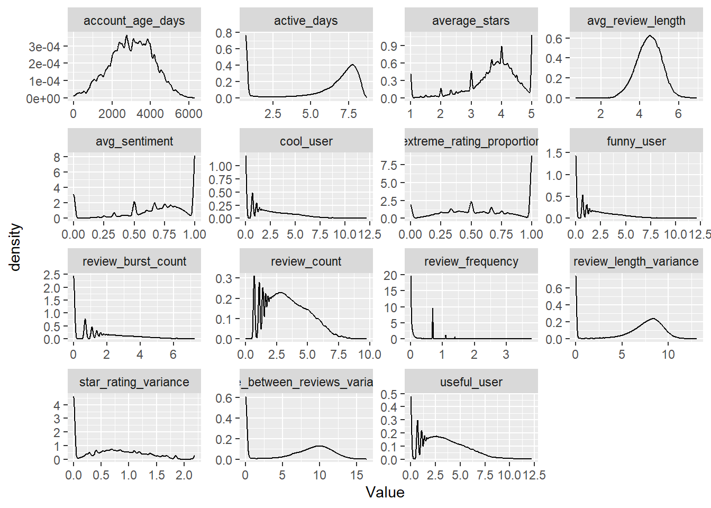
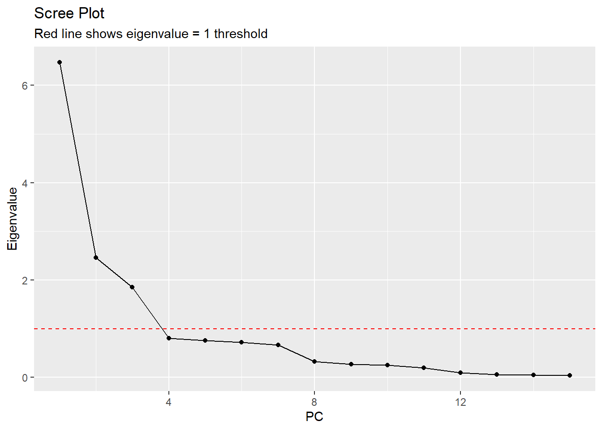
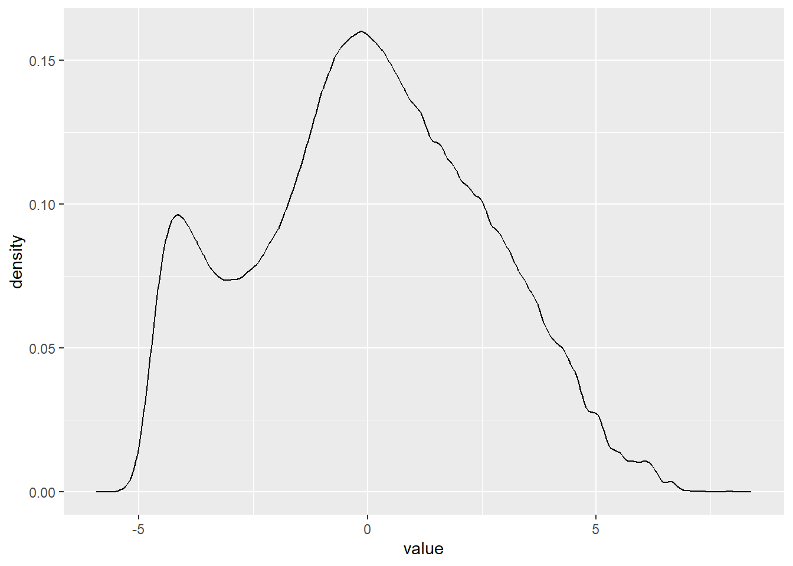
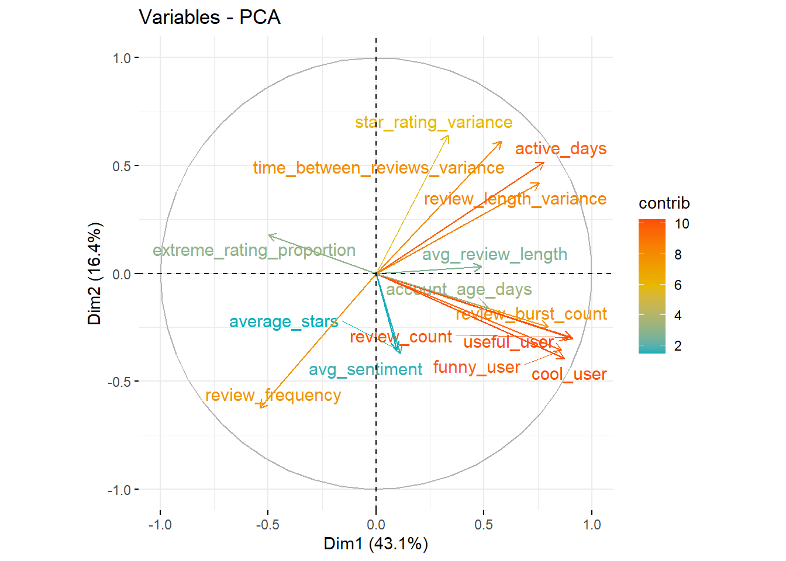
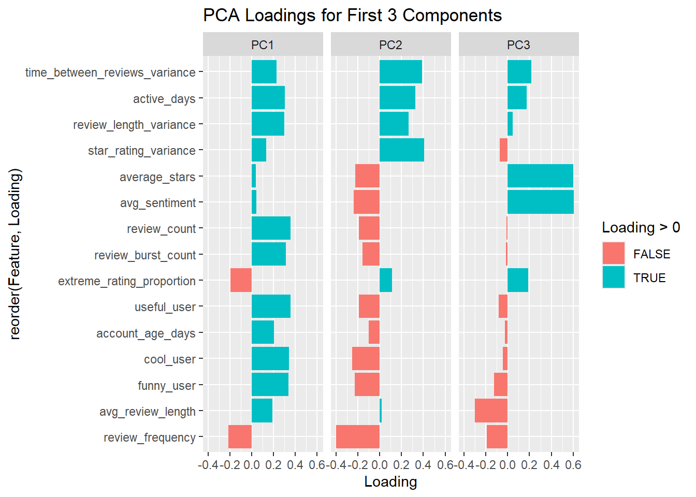
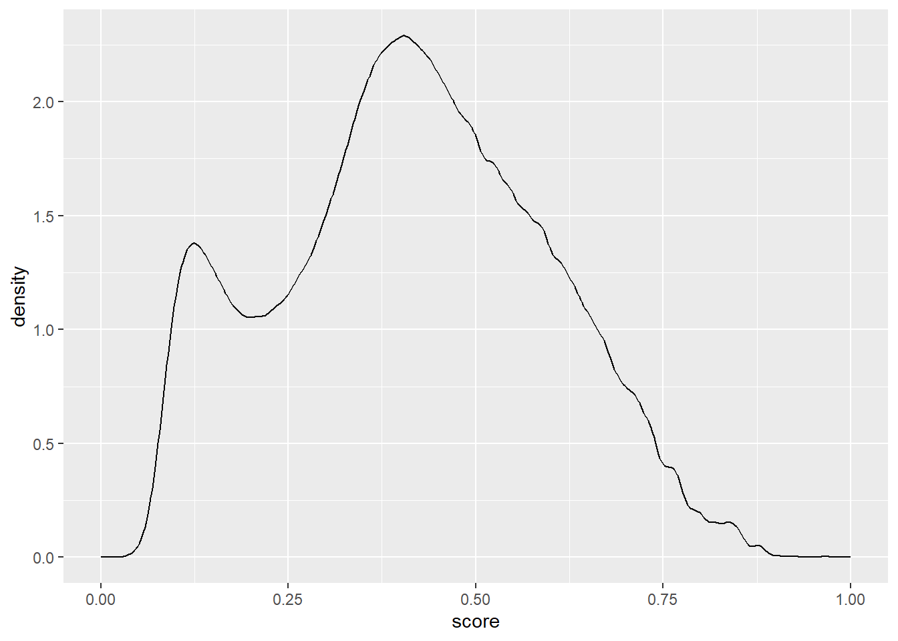

library(tidyverse)
library(factoextra)Review Data Cleaning and PCA Modeling
Preliminaries
Import libraries.
Import reviewer-review level data.
# this is a big data set! This takes a minute or two
# we are subsetting this to speed up initial computations
review <- read_csv("../Data/final_modeling_df.csv") # |> slice(1:1000000)Rows: 6990280 Columns: 22
── Column specification ────────────────────────────────────────────────────────
Delimiter: ","
chr (6): review_id, user_id, business_id, text, product_attributes, sentiment
dbl (15): stars, active_days, review_count, review_frequency, review_length...
dttm (1): date
ℹ Use `spec()` to retrieve the full column specification for this data.
ℹ Specify the column types or set `show_col_types = FALSE` to quiet this message.Data Cleaning + Visualization
Check the structure of the data. Check for duplicate user IDs based on review_count.
# Check data structure and identify reviewer vs review level variables
cat("Dataset dimensions:", dim(review), "\n")Dataset dimensions: 6990280 22 cat("Unique users:", length(unique(review$user_id)), "\n")Unique users: 1987929 cat("Unique businesses:", length(unique(review$business_id)), "\n")Unique businesses: 150346 # Check for duplicate user-level information based on review_count
review |>
group_by(user_id) |>
summarise(
unique_review_counts = n_distinct(review_count),
.groups = 'drop'
) |>
summarise(
users_with_varying_review_count = sum(unique_review_counts > 1),
)# A tibble: 1 × 1
users_with_varying_review_count
<int>
1 0Check summary statistics.
summary(review) review_id user_id business_id stars
Length:6990280 Length:6990280 Length:6990280 Min. :1.000
Class :character Class :character Class :character 1st Qu.:3.000
Mode :character Mode :character Mode :character Median :4.000
Mean :3.749
3rd Qu.:5.000
Max. :5.000
text date active_days
Length:6990280 Min. :2005-02-16 03:23:22.00 Min. : 1
Class :character 1st Qu.:2015-01-25 04:53:50.25 1st Qu.: 38
Mode :character Median :2017-06-03 01:26:07.00 Median : 996
Mean :2017-01-11 11:22:33.44 Mean :1280
3rd Qu.:2019-05-23 00:02:46.25 3rd Qu.:2148
Max. :2022-01-19 19:48:45.00 Max. :6004
review_count review_frequency review_length product_attributes
Min. : 0.0 Min. : 0.00035 Min. : 1.0 Length:6990280
1st Qu.: 7.0 1st Qu.: 0.00815 1st Qu.: 42.0 Class :character
Median : 24.0 Median : 0.02742 Median : 75.0 Mode :character
Mean : 123.8 Mean : 0.37879 Mean : 104.8
3rd Qu.: 98.0 3rd Qu.: 0.25373 3rd Qu.: 133.0
Max. :17473.0 Max. :44.00000 Max. :1070.0
NA's :33
sentiment sentiment_score useful_user funny_user
Length:6990280 Min. :0.5000 Min. : 0 Min. : 0.0
Class :character 1st Qu.:0.9960 1st Qu.: 3 1st Qu.: 0.0
Mode :character Median :0.9993 Median : 19 Median : 3.0
Mean :0.9818 Mean : 428 Mean : 176.1
3rd Qu.:0.9998 3rd Qu.: 111 3rd Qu.: 24.0
Max. :0.9999 Max. :206296 Max. :185823.0
NA's :33 NA's :33
cool_user useful_review funny_review cool_review
Min. : 0.0 Min. : -1.000 Min. : -1.0000 Min. : -1.0000
1st Qu.: 0.0 1st Qu.: 0.000 1st Qu.: 0.0000 1st Qu.: 0.0000
Median : 4.0 Median : 0.000 Median : 0.0000 Median : 0.0000
Mean : 290.1 Mean : 1.185 Mean : 0.3266 Mean : 0.4986
3rd Qu.: 39.0 3rd Qu.: 1.000 3rd Qu.: 0.0000 3rd Qu.: 0.0000
Max. :199878.0 Max. :1182.000 Max. :792.0000 Max. :404.0000
NA's :33
star_rating_variance account_age_days average_stars
Min. :0.0000 Min. : 0 Min. :1.000
1st Qu.:0.0000 1st Qu.:2247 1st Qu.:3.390
Median :0.9401 Median :3061 Median :3.880
Mean :1.3337 Mean :3017 Mean :3.746
3rd Qu.:1.9978 3rd Qu.:3839 3rd Qu.:4.290
Max. :8.0000 Max. :6308 Max. :5.000
NA's :33 NA's :33 Compute the sum of NA values in each column. Most of the NA values are coming from product attributes.
apply(review, 2, function(x) sum(is.na(x))) review_id user_id business_id
0 0 0
stars text date
0 0 0
active_days review_count review_frequency
0 33 0
review_length product_attributes sentiment
0 469119 0
sentiment_score useful_user funny_user
0 33 33
cool_user useful_review funny_review
33 0 0
cool_review star_rating_variance account_age_days
0 0 33
average_stars
33 View some rows with missing values of product_attributes.
review |>
filter(is.na(product_attributes)) |>
head(10)# A tibble: 10 × 22
review_id user_id business_id stars text date active_days
<chr> <chr> <chr> <dbl> <chr> <dttm> <dbl>
1 J-4NdnDZ0pUQ… vrKkXs… rjuWz_AD3W… 5 "I t… 2012-12-04 16:46:20 637
2 qS6kE7CDoDag… zoBajE… c-IgS6Pk6v… 4 "Wen… 2015-06-08 19:45:48 1867
3 4KpIldEM-tdn… Z5j9Xw… HTqXI5S2Xc… 5 "I'v… 2018-03-23 14:35:33 1436
4 Lk21QNbrI_e3… bCla27… sLgnx_WFCj… 5 "Our… 2014-10-27 16:31:37 2470
5 xumAI7br1X67… jEmClJ… X_E7U2lVNE… 5 "Thi… 2017-06-17 17:46:55 1365
6 onlgwy5qGDEz… pYXeL0… W7NxQw8UYF… 4 "Don… 2012-02-01 14:21:25 2197
7 PPgbLBvi34A6… 3TL6HZ… GyC36Pn0Q1… 1 "Ser… 2013-12-07 13:17:13 3157
8 zcj7iTXdSz0G… X8XCFM… Zx7n8mdt8O… 5 "A m… 2018-01-21 17:12:47 359
9 quiZPC8t-iZs… TTibuR… -ikBycdroy… 5 "Sto… 2014-09-25 18:36:53 1544
10 RMho6HMpdec1… SNngOV… ab3pRv-b0o… 5 "My … 2018-08-24 00:52:13 899
# ℹ 15 more variables: review_count <dbl>, review_frequency <dbl>,
# review_length <dbl>, product_attributes <chr>, sentiment <chr>,
# sentiment_score <dbl>, useful_user <dbl>, funny_user <dbl>,
# cool_user <dbl>, useful_review <dbl>, funny_review <dbl>,
# cool_review <dbl>, star_rating_variance <dbl>, account_age_days <dbl>,
# average_stars <dbl>View rows with missing values of review_count.
review |>
filter(is.na(review_count)) |>
head(10)# A tibble: 10 × 22
review_id user_id business_id stars text date active_days
<chr> <chr> <chr> <dbl> <chr> <dttm> <dbl>
1 HS2Og8fu_9lz… tquAg8… vpz_l8QIPS… 5 "Dr … 2022-01-19 18:32:46 1
2 TZMTtzsG7hIy… 5iBVQ3… tsx84z4c0B… 4 "Fir… 2022-01-19 19:37:15 1
3 rrXJ9Eux82kl… u8cq-5… j8JOZvfeHE… 5 "Bea… 2022-01-19 18:10:52 1
4 iyoDkW-8aneK… 433Bzx… Al7JOgn9Ch… 1 "Ter… 2022-01-19 19:06:14 1
5 XuqkOMPkmKsK… dWZlWF… P5qMWIfibf… 1 "Exo… 2022-01-19 17:22:03 1
6 JVuwa9WSsFe5… sxxnBQ… P5qMWIfibf… 5 "Our… 2022-01-19 17:32:01 1
7 GZmjLeVfDktq… MaengE… kZTwub3IkB… 1 "Ord… 2022-01-19 17:45:25 1
8 ebQaTudrnT1w… 5XiPz5… H0UeLT7rL0… 5 "Awe… 2022-01-19 18:34:30 1
9 EZ0mbYE2xvG7… I200Iy… 4H6KdEMRlS… 5 "Pic… 2022-01-19 17:31:13 1
10 1pcF0fYcXZ2V… G0PWeU… mQZpnPY7o2… 1 "Thi… 2022-01-19 17:30:20 1
# ℹ 15 more variables: review_count <dbl>, review_frequency <dbl>,
# review_length <dbl>, product_attributes <chr>, sentiment <chr>,
# sentiment_score <dbl>, useful_user <dbl>, funny_user <dbl>,
# cool_user <dbl>, useful_review <dbl>, funny_review <dbl>,
# cool_review <dbl>, star_rating_variance <dbl>, account_age_days <dbl>,
# average_stars <dbl>Deal with missing values. We impute empty strings for product attributes and drop rows with missing values in other variables. (Will revisit data cleaning to figure out why these missing values exist).
review <- review |>
mutate(
# Impute missing product attributes with empty strings
product_attributes = ifelse(is.na(product_attributes), "", product_attributes),
)
review <- review |>
filter(if_all(everything(), ~!is.na(.)))View the data. Some variables are reviewer-level (they have the same value across all reviewer-specific observations) and some are review-level.
review |>
arrange(user_id)# A tibble: 6,990,247 × 22
review_id user_id business_id stars text date active_days
<chr> <chr> <chr> <dbl> <chr> <dttm> <dbl>
1 rJ3CASyRfG-7… ---1lK… f19eLfhXqR… 5 "I h… 2018-12-19 22:26:22 1
2 xJuVVh0wspQl… ---2Pm… hKameFsaXh… 5 "No … 2014-10-28 14:38:58 2377
3 hdtWMFs_rFCD… ---2Pm… hKameFsaXh… 5 "Thi… 2014-07-10 04:15:23 2377
4 LBxTq5kq_Eea… ---2Pm… KP5OncF2jh… 5 "Wha… 2015-06-27 23:38:13 2377
5 --C3ehBCy19v… ---2Pm… igC3UWYb9R… 5 "Gre… 2013-04-03 19:06:00 2377
6 Plgeha6t05uC… ---2Pm… RwgohauKm5… 5 "Gre… 2014-11-08 13:57:23 2377
7 qRJ5SbFpofSw… ---2Pm… ZvI9Ytqx_S… 5 "I m… 2014-07-24 03:11:30 2377
8 wXZD9m3KDCjG… ---2Pm… aOz57yKwap… 5 "Thi… 2018-11-10 02:27:23 2377
9 PtiOktOk5COH… ---2Pm… eR7ieJD12P… 5 "Gre… 2012-11-02 00:30:24 2377
10 oPJZvPTykI8j… ---2Pm… hTA0eCoMdA… 5 "Wha… 2016-08-21 18:28:20 2377
# ℹ 6,990,237 more rows
# ℹ 15 more variables: review_count <dbl>, review_frequency <dbl>,
# review_length <dbl>, product_attributes <chr>, sentiment <chr>,
# sentiment_score <dbl>, useful_user <dbl>, funny_user <dbl>,
# cool_user <dbl>, useful_review <dbl>, funny_review <dbl>,
# cool_review <dbl>, star_rating_variance <dbl>, account_age_days <dbl>,
# average_stars <dbl>Compute summaries of review-level variables for each reviewer and additional features of interest.
review <- review |>
mutate(date = as.Date(date)) |>
arrange(user_id, date) |>
group_by(user_id) |>
mutate(
# compute the average review length for each reviewer
avg_review_length = mean(review_length),
# compute the proportion of positive reviews written by a given reviewer
avg_sentiment = mean(sentiment == "POSITIVE"),
# Consistency metrics
review_length_variance = var(review_length),
time_between_reviews_variance = var(diff(date)),
# Suspicious patterns
review_burst_count = sum(diff(date) < 1),
# proportion of reviews with 1 or 5 star ratings
extreme_rating_proportion = mean(stars %in% c(1, 5))) |>
ungroup() Check for missing values in the newly created variables.
apply(review, 2, function(x) sum(is.na(x))) review_id user_id
0 0
business_id stars
0 0
text date
0 0
active_days review_count
0 0
review_frequency review_length
0 0
product_attributes sentiment
0 0
sentiment_score useful_user
0 0
funny_user cool_user
0 0
useful_review funny_review
0 0
cool_review star_rating_variance
0 0
account_age_days average_stars
0 0
avg_review_length avg_sentiment
0 0
review_length_variance time_between_reviews_variance
1135977 1779157
review_burst_count extreme_rating_proportion
0 0 Replace missing values for review_length_variance and time_between_reviews_variance with 0, as these metrics are not applicable for users with only one review.
review <- review |>
mutate(
review_length_variance = ifelse(is.na(review_length_variance), 0, review_length_variance),
time_between_reviews_variance = ifelse(is.na(time_between_reviews_variance), 0, time_between_reviews_variance)
)Select reviewer-level variables and pivot to long format.
# create data frame with user-level variables and ID
review_user <- review |>
select(user_id,
active_days,
review_count,
review_frequency,
time_between_reviews_variance,
review_burst_count,
useful_user,
funny_user,
cool_user,
star_rating_variance,
extreme_rating_proportion,
avg_review_length,
review_length_variance,
avg_sentiment,
account_age_days,
average_stars)
long_user <- review_user |>
pivot_longer(names_to="Feature", values_to="Value", -user_id)Visualize feature distributions for reviewer-level characteristics. Some users have really extreme values for the votes like ‘cool’, ‘funny’, and ‘useful’. Review count and frequency are also strongly right-skewed.
long_user |>
ggplot(aes(x=Value)) +
geom_density() +
facet_wrap(~Feature, scales='free')
Use a log transformation to address the skewness. Use an offset of one for all transformed variables.
# Consider Box-Cox transformation instead of log for heavily skewed variables
review_user_transformed <- review_user %>%
mutate(across(
.cols = c("active_days",
"avg_review_length",
"cool_user",
"funny_user",
"review_burst_count",
"review_count",
"review_frequency",
"review_length_variance",
"star_rating_variance",
"time_between_reviews_variance",
"useful_user"),
.fns = log1p
))Redefine long_user using the log-transformed data.
long_user <- review_user_transformed |>
pivot_longer(names_to="Feature", values_to="Value", -user_id)Plot feature distributions again. They are slightly improved.
long_user |>
ggplot(aes(x=Value)) +
geom_density() +
facet_wrap(~Feature, scales='free')
PCA
Compute principal components. We center and scale all features to weight them equally.
# the -1 column subset excludes the user ID
pca <- prcomp(review_user_transformed[, -1], center=TRUE, scale=TRUE)View PCA results. Three eigenvectors have eigenvalues greater than 1 (rule of thumb) and three components are able to explain 72% of the variance of the data, which is pretty high for only three components.
summary(pca)Importance of components:
PC1 PC2 PC3 PC4 PC5 PC6 PC7
Standard deviation 2.5435 1.5691 1.3604 0.89605 0.86908 0.84827 0.81617
Proportion of Variance 0.4313 0.1641 0.1234 0.05353 0.05035 0.04797 0.04441
Cumulative Proportion 0.4313 0.5954 0.7188 0.77235 0.82270 0.87067 0.91508
PC8 PC9 PC10 PC11 PC12 PC13 PC14
Standard deviation 0.5653 0.5196 0.50290 0.44577 0.30147 0.23820 0.22518
Proportion of Variance 0.0213 0.0180 0.01686 0.01325 0.00606 0.00378 0.00338
Cumulative Proportion 0.9364 0.9544 0.97124 0.98449 0.99055 0.99433 0.99771
PC15
Standard deviation 0.18527
Proportion of Variance 0.00229
Cumulative Proportion 1.00000Eigenvalue scree plot. The red line indicates the eigenvalue = 1 threshold, which is a common rule of thumb for determining the number of components to retain. Components with eigenvalues greater than 1 are generally considered significant.
# Calculate eigenvalues from PCA results
eigenvalues <- pca$sdev^2
# Create a scree plot
tibble(
PC = 1:length(eigenvalues),
Eigenvalue = eigenvalues,
Proportion = eigenvalues / sum(eigenvalues),
Cumulative = cumsum(Proportion)
) |>
ggplot(aes(x = PC, y = Eigenvalue)) +
geom_point() +
geom_line() +
geom_hline(yintercept = 1, linetype = "dashed", color = "red") +
labs(title = "Scree Plot", subtitle = "Red line shows eigenvalue = 1 threshold")
Plot the distribution of PC1.
as_tibble(pca$x[, 1]) |>
ggplot(aes(x = value)) +
geom_density()
Plot directional loadings for PC1 and PC2.
# To visualize component loadings more clearly
fviz_pca_var(pca, col.var = "contrib",
gradient.cols = c("#00AFBB", "#E7B800", "#FC4E07"),
repel = TRUE)
Visualize loadings for the first three components. The loadings indicate how much each feature contributes to each principal component. Positive loadings indicate a positive relationship with the component, while negative loadings indicate a negative relationship.
# Examine loadings for first 3 components
loadings_df <- as_tibble(pca$rotation[, 1:3], rownames = "Feature")
# Visualize loadings
loadings_df |>
pivot_longer(cols = -Feature, names_to = "PC", values_to = "Loading") |>
ggplot(aes(x = reorder(Feature, Loading), y = Loading, fill = Loading > 0)) +
geom_col() +
facet_wrap(~PC) +
coord_flip() +
labs(title = "PCA Loadings for First 3 Components")
Interpret the first three eigenvectors.
Interpretation of PC1:
Interpretation of PC2:
Interpretation of PC3:
Use min-max scaling to transform PC1 values to 0 to 1 scale.
# Min-max scaling for PC1
trust_scores <- (pca$x[, 1] - min(pca$x[, 1])) / (max(pca$x[, 1]) - min(pca$x[, 1]))Plot trust scores.
tibble(score = trust_scores) |>
ggplot(aes(x = score)) +
geom_density()
What do some of the people look like at either end of this distribution?
# add trust score variable to user level data
review_user <- review_user |>
mutate(trust_scores = trust_scores)Top 5 trustworthy users.
review_user |>
slice_max(trust_scores, n=5)# A tibble: 306 × 17
user_id active_days review_count review_frequency time_between_reviews…¹
<chr> <dbl> <dbl> <dbl> <dbl>
1 Hi10sGSZNxQ… 4033 17473 0.0759 3940.
2 Hi10sGSZNxQ… 4033 17473 0.0759 3940.
3 Hi10sGSZNxQ… 4033 17473 0.0759 3940.
4 Hi10sGSZNxQ… 4033 17473 0.0759 3940.
5 Hi10sGSZNxQ… 4033 17473 0.0759 3940.
6 Hi10sGSZNxQ… 4033 17473 0.0759 3940.
7 Hi10sGSZNxQ… 4033 17473 0.0759 3940.
8 Hi10sGSZNxQ… 4033 17473 0.0759 3940.
9 Hi10sGSZNxQ… 4033 17473 0.0759 3940.
10 Hi10sGSZNxQ… 4033 17473 0.0759 3940.
# ℹ 296 more rows
# ℹ abbreviated name: ¹time_between_reviews_variance
# ℹ 12 more variables: review_burst_count <int>, useful_user <dbl>,
# funny_user <dbl>, cool_user <dbl>, star_rating_variance <dbl>,
# extreme_rating_proportion <dbl>, avg_review_length <dbl>,
# review_length_variance <dbl>, avg_sentiment <dbl>, account_age_days <dbl>,
# average_stars <dbl>, trust_scores <dbl>Top 5 untrustworthy users.
review_user |>
slice_min(trust_scores, n=5)# A tibble: 5 × 17
user_id active_days review_count review_frequency time_between_reviews…¹
<chr> <dbl> <dbl> <dbl> <dbl>
1 w-u9XSX5SksC… 1 1 1 0
2 NCxkHUGQFLUm… 1 1 1 0
3 3hVFEgVTUoWR… 1 1 1 0
4 KrXr7kV-JWfO… 1 1 1 0
5 BQuZAD2Z7R67… 1 1 1 0
# ℹ abbreviated name: ¹time_between_reviews_variance
# ℹ 12 more variables: review_burst_count <int>, useful_user <dbl>,
# funny_user <dbl>, cool_user <dbl>, star_rating_variance <dbl>,
# extreme_rating_proportion <dbl>, avg_review_length <dbl>,
# review_length_variance <dbl>, avg_sentiment <dbl>, account_age_days <dbl>,
# average_stars <dbl>, trust_scores <dbl>